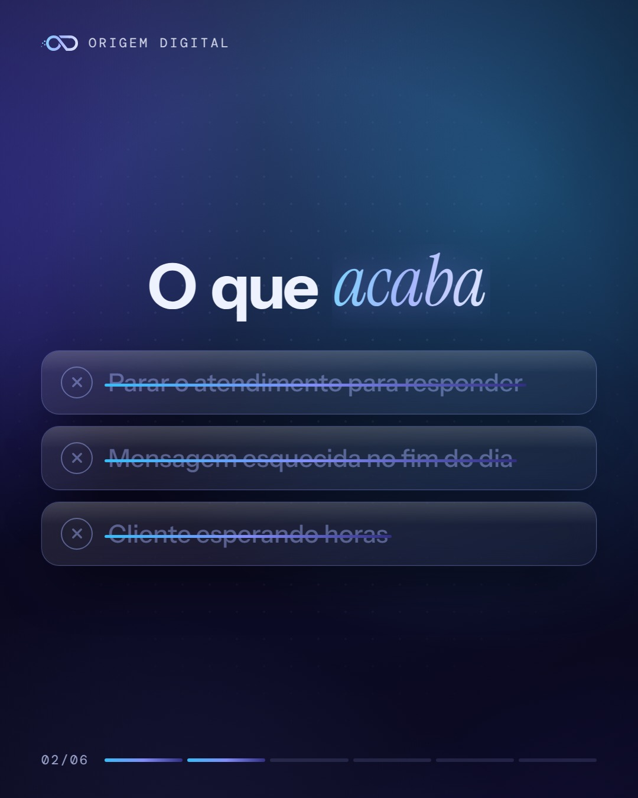
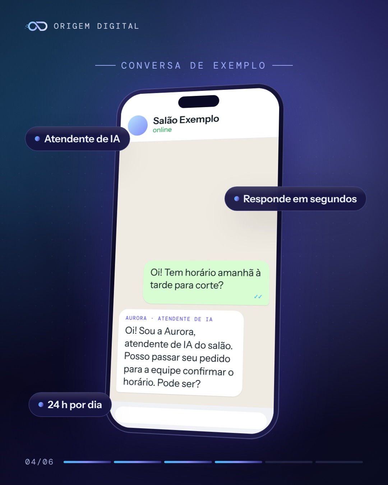
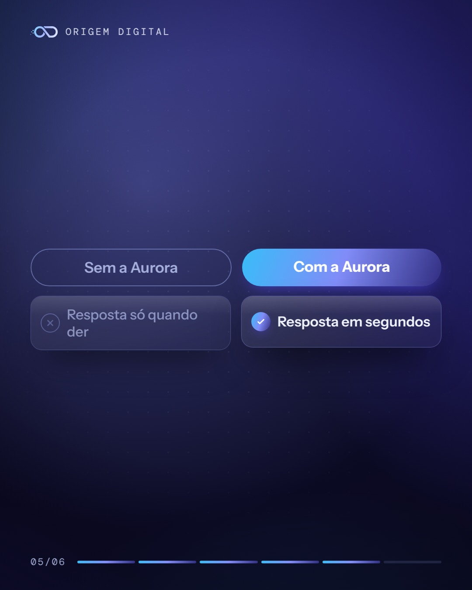

Carrossel · quinta-feira, 29/10, 12:30
Prévia do post da Origem Digital. Ele só sai no Instagram depois de aprovado pelo link do WhatsApp.




Arraste para o lado para ver as 6 fotos.
Legenda
Mão na tinta, celular tocando: quem responde o cliente?
No meio do almoço do salão, a cadeira está ocupada e chega a pergunta: tem horário amanhã? A resposta fica para depois, e o depois às vezes chega tarde.
Com a Origem Digital, a Aurora, atendente de inteligência artificial, responde no WhatsApp do salão em segundos e passa o pedido para a equipe.
Peça seu diagnóstico gratuito: link na bio ou WhatsApp (11) 93929-9209.
A conversa do post é um exemplo.
#salaodebeleza #cabeleireira #atendimentoaocliente #whatsappbusiness #pequenosnegocios #saopaulo